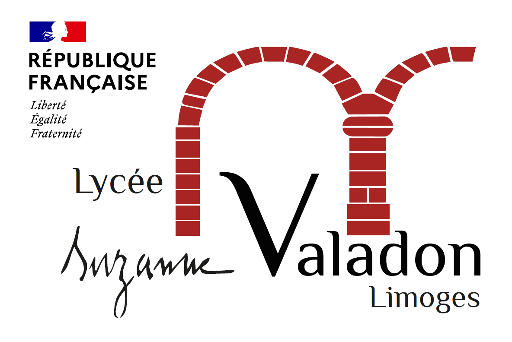

Projets / Entreprise
Projets en entreprise
Initiatives réalisés lors de mes stages et périodes en entreprise.
Entreprise
Module D'analyse des Fréquentations
Création d'un module d'analyse des fréquentations des espaces sportifs et de loisirs avec framework Symfony, Doctrine ORM et Chart.js.
PHP
Visual Studio Code
Symfony
Chart.js
Doctrine ORM
Docker
Détails du projet →

Pédagogique
Projet Séminaire
Création d'une application d'inscription web automatisée pour les admis Parcoursup aux formations Post-Bac du Lycée Proposées sur Parcoursup.
PHP
Visual Studio Code
Symfony
EasyAdmin
Docker
Doctrine ORM
Détails du projet →